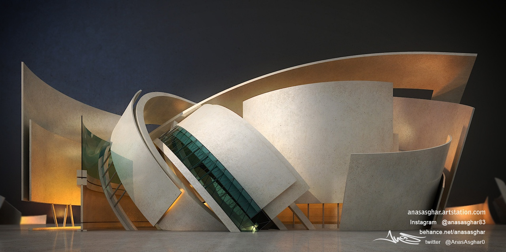

Situated on a picturesque 54 acre hay field of western Connecticut, the single family 2,000 square feet home incorporates its environment without sacrificing anything of its own. The reflective surfaces covering the 18.36.54 house are clad in mirror-finished bronzed stainless steel. This material allows it to interact dynamically with the viewer as it constantly adapts and reflects the weather and environmental changes around it. The main design of 18.36.54 house looks like a folded ribbon, flattened and creates an unexpected frame for the unimpeded view.
Large glass surfaces enclose the interior space which is furnished with custom made finishes, cabinetry and built-in furniture. The interior finishes and elements where handcrafted from locally harvested oak wood. The interior plan follows a free form of fluid movement for one space to the next. The circulation throughout the 18.36.54 house is seamless and free flowing. The custom made finishes, and a small floor level difference on the kitchen floor both distinguish the kitchen, living, dining and sleeping areas without separating them.

HOME
Assignment 1
Assignment 2